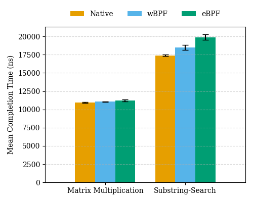

I'm a third-year undergraduate student in Computer Science at Stanford University, advised by Professor Keith Winstein.
My main interest is in computer systems. My current projects involve WebAssembly, Embedded Rust, and formal verification.
wBPF: Safe Kernel Extensibility with WebAssembly<\p>
